We source our beans from Joe Coffee and our pastries from a rotating variety of local bakeries to support small businesses while offering the best! While our menu is simple and short, we believe in the importance of quality and ensure that every item will wow even the pickiest palettes in the city. If you're not sure what to order, ask our barista for a recommendation. We also have rotating seasonal specials, so make sure to check those at as well. Substitutions are available upon request. Please let the barista know about any allergies.
About Joe Coffee beans:
Joe Coffee Company was founded in 2003
by Jonathan Rubinstein as a singular specialty coffee cafe in Manhattan’s Greenwich Village. They have now
expanded to 21 stores across the city. We've picked them as our
coffee bean source because after tasting hundreds of samples, we decided that the smooth flavor tones of their coffee
never seemed to get old. We kept coming back. And back. And back. Joe Coffee also adheres to a rigorous sourcing process
for their beans that sets the bar for ethical and quality sourcing. If you like the taste as much as we do, bags of whole beans
are available for purchase in our shop.
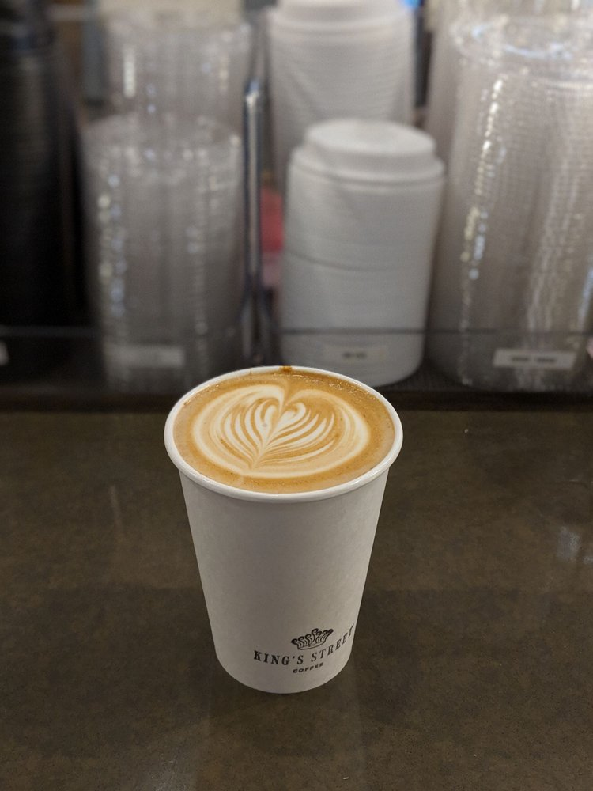
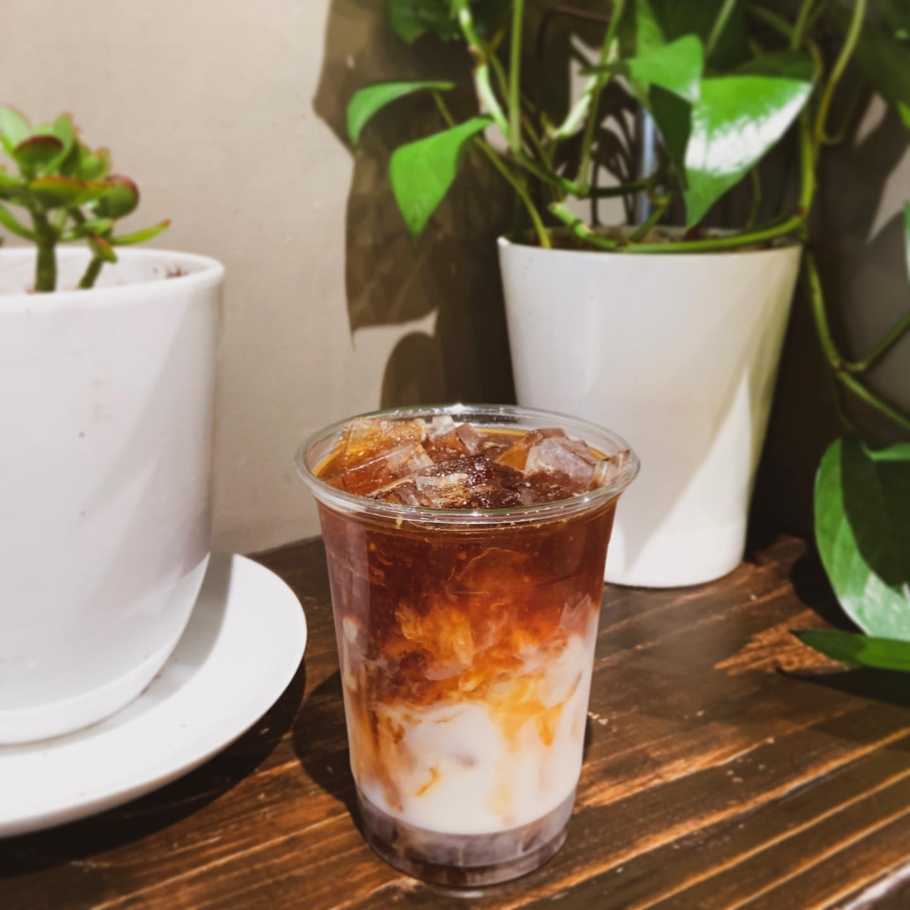
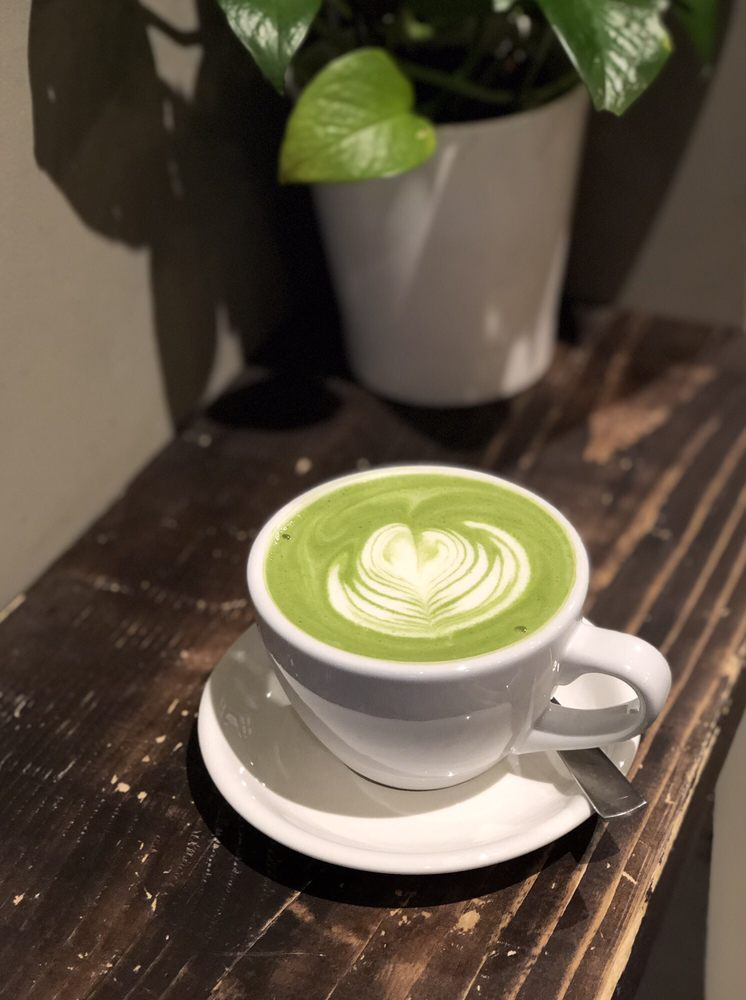
 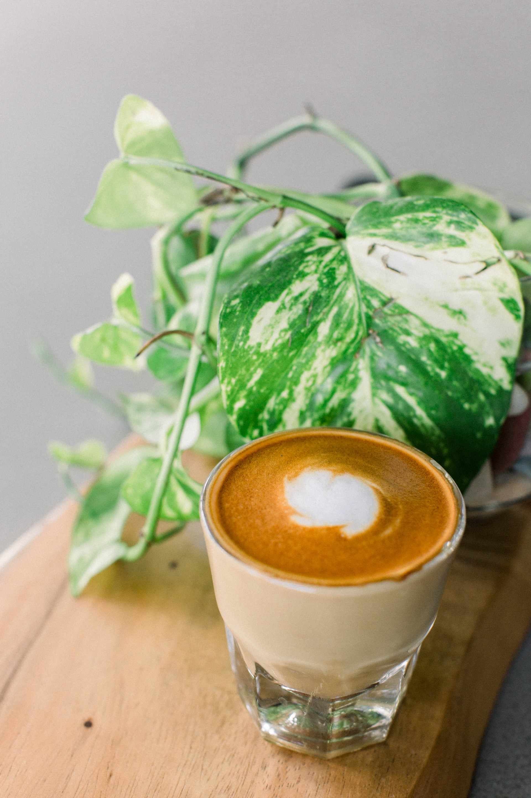
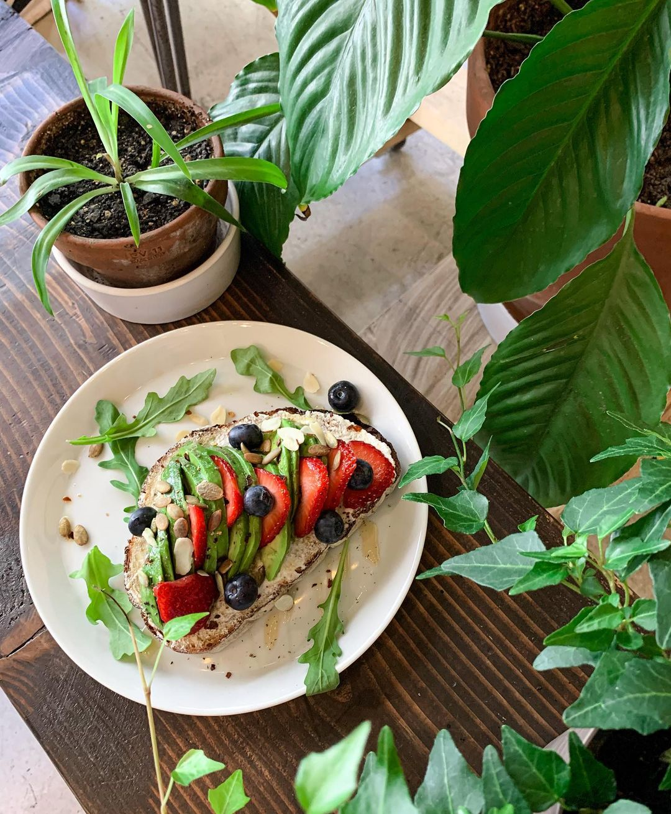
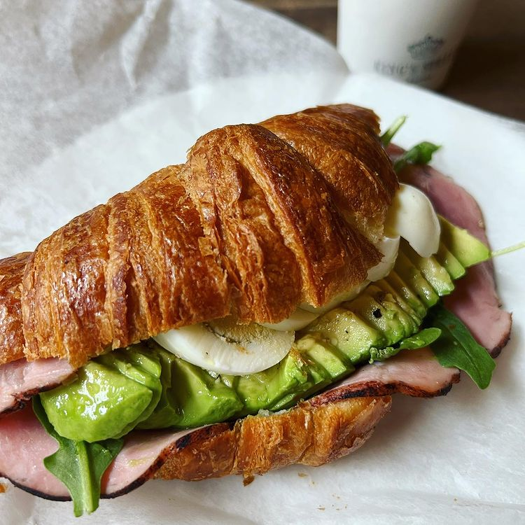
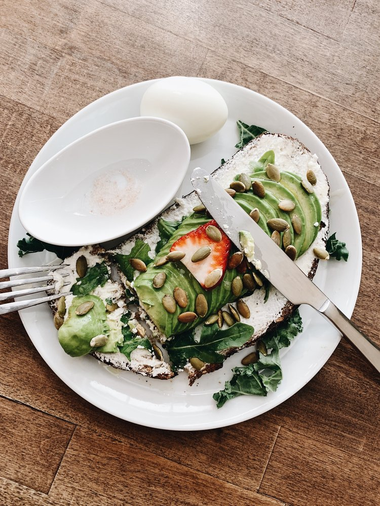
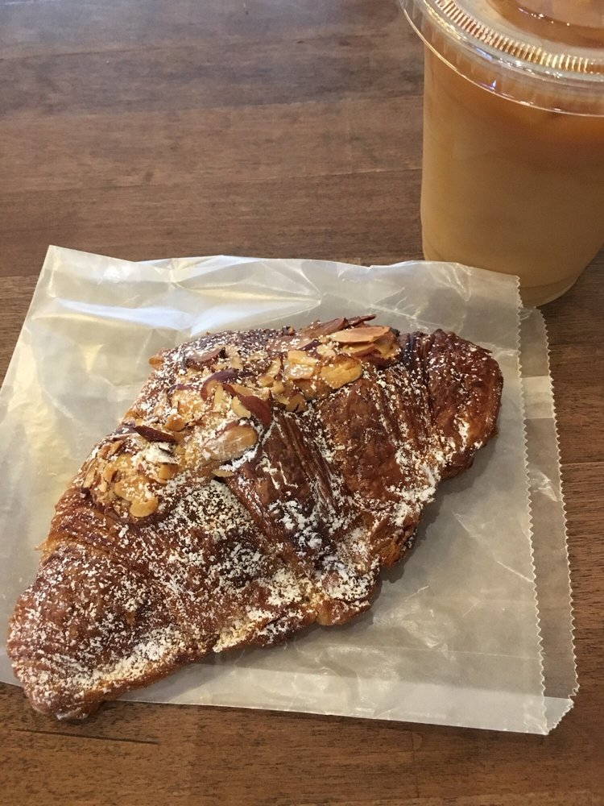
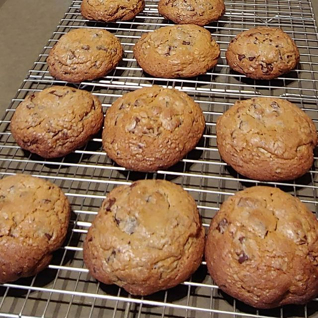
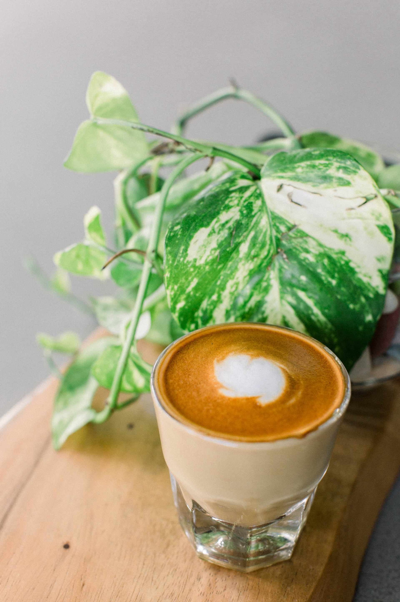
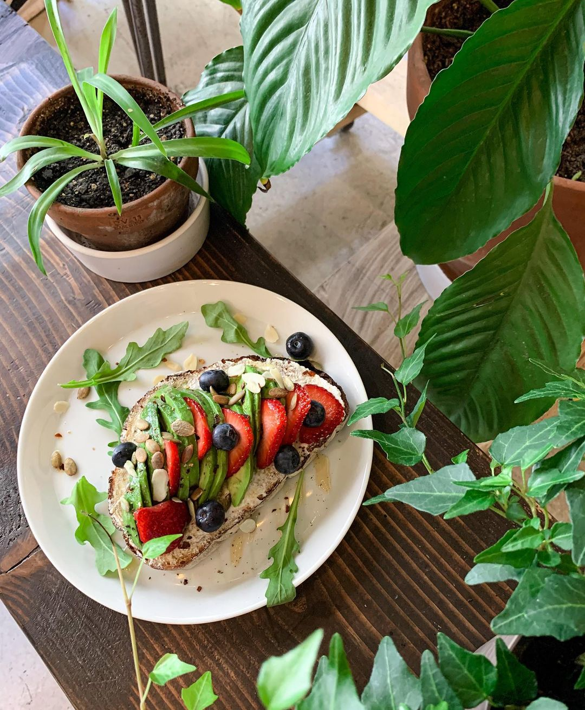
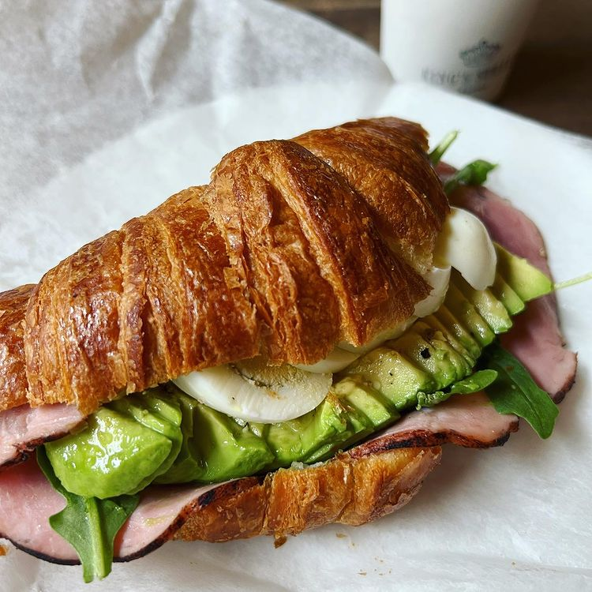
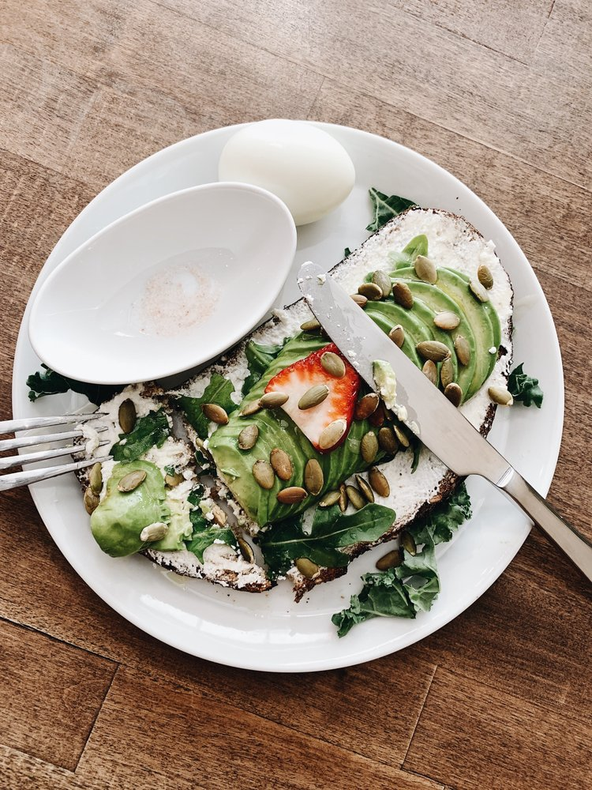
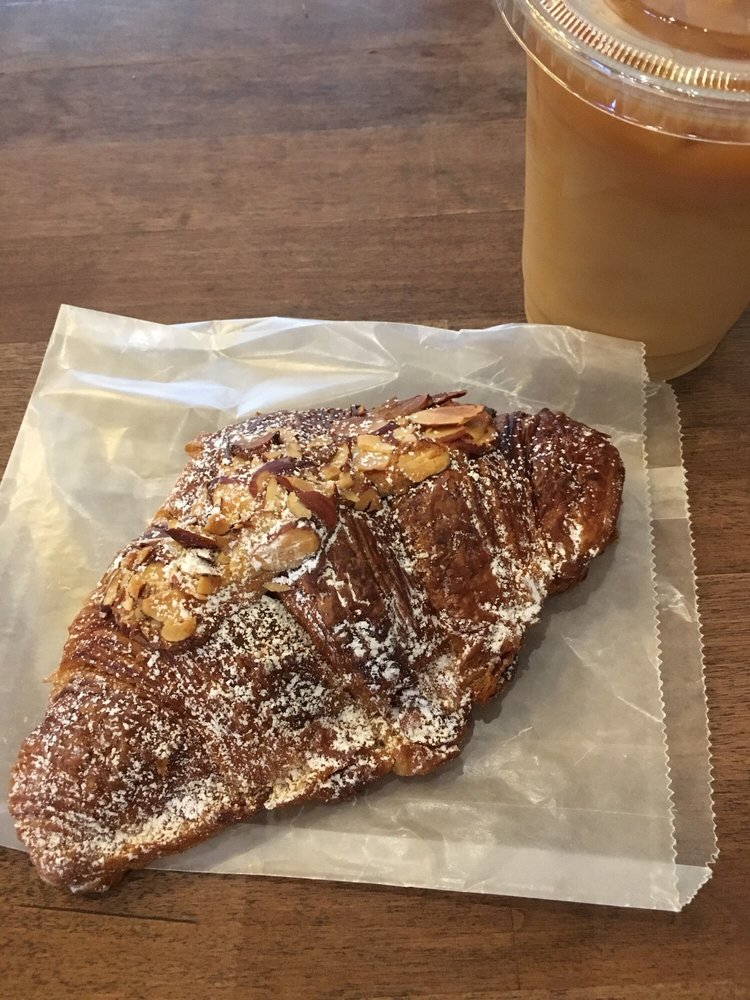
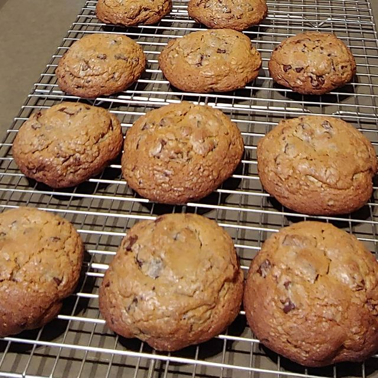